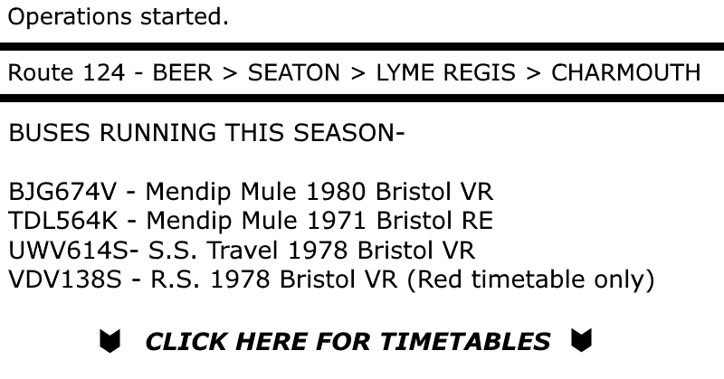

Seaton & District Bus Page
Welcome to the enthusiasts page for Seaton & Surrounding area.
Including information on all operators nearby.
Find photos of the AVMT fleet
Find photos of the Stagecoach South West fleet
Find photos of the Mendip Mule fleet
Find photos of the Hatch Green fleet
--
List of all bus routes from Seaton
--
AVMT: Latest news:
/// AXE VALLEY 885 TIMETABLE \\\
/// AXE VALLEY 899 (daytime) TIMETABLE \\\
--
Mendip Mule: Latest news: 
/// MENDIP MULE TIMETABLES \\\

 /// AXE VALLEY 885 TIMETABLE \\\
/// AXE VALLEY 899 (daytime) TIMETABLE \\\
/// AXE VALLEY 885 TIMETABLE \\\
/// AXE VALLEY 899 (daytime) TIMETABLE \\\
 /// AXE VALLEY 885 TIMETABLE \\\
/// AXE VALLEY 899 (daytime) TIMETABLE \\\
/// AXE VALLEY 885 TIMETABLE \\\
/// AXE VALLEY 899 (daytime) TIMETABLE \\\